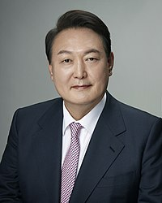
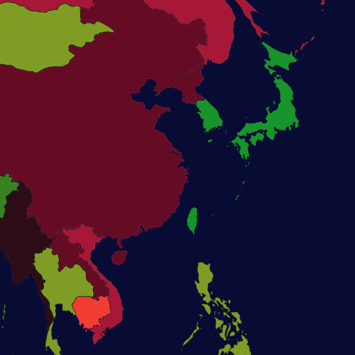
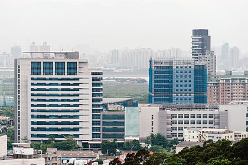
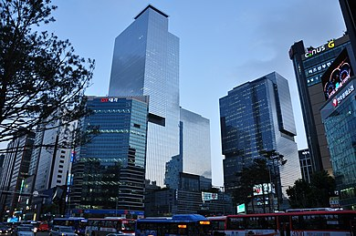

Deux démocraties semblables et conformes au modèle occidental
Une démocratisation progressive
- Taïwan : Le processus de démocratisation n’y est amorcé que dans les années 80, après des décennies de dictature sanglante, à l’initiative de Tchang Ching-kuo, le fils de Tchang Kai-chek.
Cette démocratisation, douce, voulue par le régime, est assez unique puisqu’elle s’est faite sans violence. - Corée du Sud : Lors de l'indépendance de la Corée du Sud en 1948, une république fut instaurée.
Le suffrage étant indirect, les présidents choisissaient leur successeur et les coréens ont dû manifester pour un système démocratique plus juste.
Suite aux manifestations d'avril 1960, la première république tomba; Cela n'empêcha pas l'armée de faire un coup d'État, forçant de nouveau le peuple à manifester pour la démocratie.
Ces manifestations(comme celle de 1980 et de 1987) mirent fin aux injustices et créa une démocratie juste et stable en Corée du Sud, comme le souhaitait la population..jpg)
Photographie de la manifestation de 1987
Suffrage universel et système démocratique :
- Taïwan : Taïwan compte deux partis politiques majeurs: le Kuomindang (parti nationaliste) et le Minjindang (le parti actuellement au pouvoir avec Tsai Ing-wen, la présidente de Taïwan).
Durée du mandat: quatre ans, renouvelable une fois.
Taïwan fait partie des démocraties dites "complètes", contrairement à la France, qui est jugée comme une démocratie défaillante ; le suffrage universel y apparaît en 1996..png)
Portrait de Tsai Ing-wen Présidente de la république de Chine
- Corée du Sud :
Deux partis politiques majeurs :
Parti Minju, parti libéral fondé en 2014 sous le nom de "Nouvelle alliance politique pour la démocratie" avec 176 députés.
Et le parti du président Moon Jae-in "Pouvoir au peuple" , parti conservateur avec 103 députés.
Ce dernier est issu de la fusion en 2020, de plusieurs petits partis avec le Parti de la liberté de Corée.
Il est fondé en 1997 et connu jusqu'en 2012 sous le nom de "Grand parti national", puis de "Parti Saenuri" (parti de la nouvelle frontière) jusqu'en 2017.
Durée du mandat: cinq ans, non renouvelable.
La Corée du Sud fait parti des démocraties dites "complètes", contrairement à la France, qui est jugée comme une démocratie défaillante Portrait de Yoon Seok-youl Président de la Corée du Sud
- 
Carte déduite du classement de The Economist en 2022, la couleur vert foncé de la Corée du Sud et de Taïwan attestent d’un score élevé.
Pays modernes, influents et ouverts sur le monde
- Taïwan : Devenu champion mondial en matière d’innovation technologique, le pays a su se hisser au rang des puissances mondiales avec des entreprises comme Asus ou Acer.
Il est également exemplaire sur le plan social, par exemple avec l’élection d’une femme à sa tête (ce qui n’a jamais été le cas en France), ou encore la nomination d’une femme transgenre comme ministre du numérique
 - Corée du Sud :
Une culture populaire (K-pop, taekwondo) associée à la culture traditionelle coréenne partagée avec la Corée du Nord.
Posséde de grandes multinationales comme les entreprises Samsung et LG qui sont leaders en matière de technologies dans le monde. Photographie de la Samsung town situé à Séoul,siege social des principales entreprises du groupe Samsung
.png)